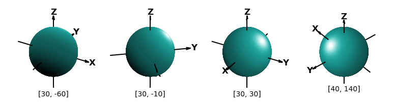
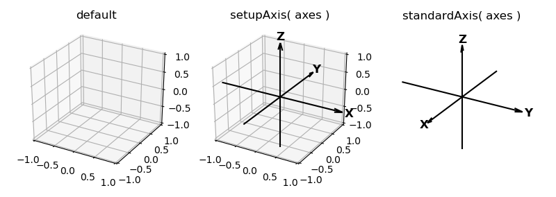
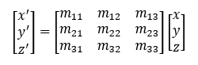
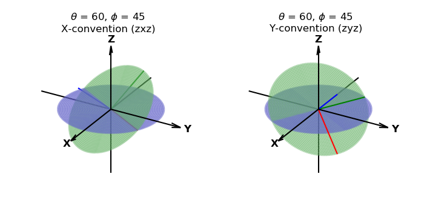
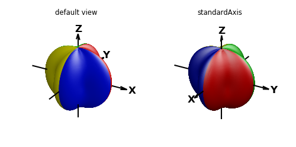
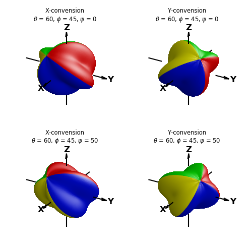
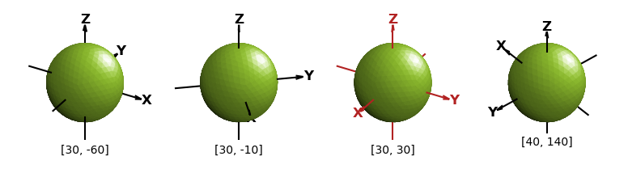

Orientation¶
Figure orientation in 2D is generally of little concern. Usually, plots are oriented with independent variables on the horizontal axis, x-axis, and dependent ones on the vertical axis, y-axis. Then viewed normal to plane.
For 3D surfaces, visualizations are controlled by
- viewing position relative to the coordinate axes
- surface orientation relative to the coordinate axes
- lighting direction relative to the viewer or coordinate axes
Coordinate Views¶
Standard 3D axis views are controlled by the Matplotlib 3D axes method:
axes.view_init(elev, azim)
where elev and azim are the elevation and azimuthal viewing angle relative to the coordinate axis. The azim controls the rotation about the z-axis. The elev sets the z-axis tilt foward and back from the view.
Since restricted to controlling views using these two arguments, the omission of a third rotation in 3D doesn’t permit the z-axis to be tilted to the right or left in the view. The transform method discussed in the next section permits viewing the surface object from this perspective by rotating the surface in addition to the view. The following plots show the effect of shading and highlighting for various view orientations, with the illumination direction of [0,1,1].
The default values for elev and azim are 30 and -60, respectively in degree units, which is used if this method is not called. In addition, three planes normal to the axis are shown by default. S3Dlib provides a method to show an xyz coordinate axis system in the 3D axes visualization, called as:
setupAxis( axes, length=1.5, width=2, color='black', offset=0.0, negaxis=True )
Where all arguments, except the 3D axes are named arguments. The offset argument is the position on the axis where the tail of the coordinate arrow is located. The negaxis argument is set to False if the negative coordinate lines are not to be shown.
When viewing surfaces, particularly mathematical function representations, a ‘standard’ coordinate system is usually shown with the x and y axis pointing to the left and right, with the z-axis pointing upward. S3Dlib provides a method to initialize the plot for s ‘standard’ view using the method:
standardAxis( axes )
This method uses the same argument list as the previous method. When this method is called, the axis view is changed using view_init(30,30) and the axis set off. In addition, the minimum and maximum x, y, and z-axis are set to -1 and 1, which is consistent with the S3Dlib object size normalizations.
The default axes setup for the three methods is shown in the plots below.
Object Rotations¶
Surface objects can be transformed so that the surface rotates relative to the origin using the transform method:
surface.transform(matrix)
where the matrix argument is a 3x3 transformation matrix, e.g.
The use of a transformation matrix argument provides flexibility, but for simple surface rotations, S3Dlib provides a convenient method of calculating a rotational matrix from angles using the method:
matrix = eulerRot(theta, phi, psi=0, useXconv=True, inrad=False)
where theta, phi and psi ( θ, φ, ψ ) are Euler rotational angles about the coordinate axis using the right hand rule. The angles are in degrees as the default. Rotations in 3D are dependent on the sequence of rotations. Two conventions are supported. The sequence of rotations are
| Order | Rotation | X-convention (zxz) | Y-convention (zyz) |
|---|---|---|---|
| 1 | θ | Z - axis | Z - axis |
| 2 | φ | X - axis | Y - axis |
| 3 | ψ | Z - axis | Z - axis |
The default is to use X-convention. Setting the useXconv argument to False changes the interpretation to Y-convention. When the inrad argument is set to True, the rotational angles will be interpreted in radians. The rotation of the coordinate axis is shown below, which illustrates the difference between the X and Y conventions.
To illustrate the final rotation ψ about the z-axis (shown in blue in the above figure), consider the following surface shown in the default view and standard axis view below:
The following shows the same surface using a standard axis and various surface rotations. Plots have the same values for θ and φ which was used in the previous coordinate plot. The effect of the ψ rotation is seen by comparing the top to bottom surface orientations.
Illumination Source¶
The perception of 3D surfaces from a 2D image is accomplished by ‘simulating’ an illumination projection based on surface normals. S3Dlib illumination sources are referenced relative to the coordinate axis, as discussed in the Shading, Highlighting and Color Mapped Normals guide. The Matplotlib view parameters of elevation and azimuth are also referenced relative to the coordinate axis.
As coordinate views and object orientations are changed from the default, it may be useful to have an illumination source that is referenced to the viewer, not the coordinate axis. This is particularly needed when animations are required to be ‘perceived as’ the object orientation being changed, not the viewer orientation changing. This was achieved in the View_init() Azim Reset and Shading animation example. In that case, the objects are perceived as rotating, not the viewer moving around the objects. However, the opposite was actually being calculated with the illumination source position changing with the view.
So, the two types of perceptions of the same object are:
- Stationary viewer - Illumination source referenced to the viewer.
- Stationary object - Illumination source referenced to the coordinate system.
Using a sunset analogy, is the sun going down or are you rotating backward? It’s the same image. Kepler, Copernicus and Galileo made a perceptual leap.
The illumination source relative to the viewer can be determined using the function:
reldir = rtv(direction,elev,azim)
where direction is a 3D vector in xyz coordinates. The parameters, ‘elev’ and ‘azim’ are the view orientations. Using the ‘reldir’ for the direction in the shade and hilite methods, the light source will always appear to come from the same direction, independent of the coordinate elev and azim view. In the following figures, a direction argument of [1,1,1] was used for all views.
A good example of using the relative illumination source is shown in the View_init() Elev and Azim Reset and Shading animation example where both elev and azim parameters are varied from frame to frame.